TTL Bus Servos
Control position and speed while reading device feedback.
Feetech HLS / STS / SCS seriesTTL BUS ADAPTER
Connect a host computer or embedded controller through USB or UART. Bus servos, encoders, stepper drivers, and other single-wire TTL devices share one communication link, simplifying robot system integration.
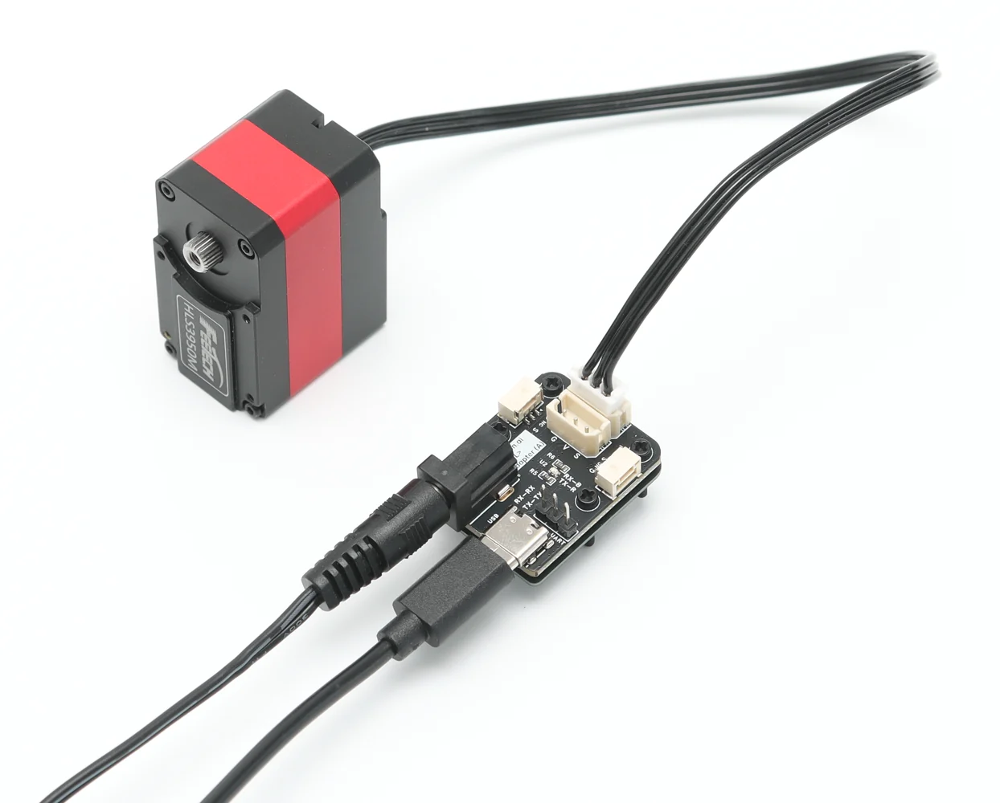
ONE BUS, MORE DEVICES
Any single-wire TTL bus device with compatible protocol and electrical specifications can connect to the host through TTL Adapter (A).
Control position and speed while reading device feedback.
Feetech HLS / STS / SCS seriesRead joint angle, speed, and encoder status data.
Position / speed / status feedbackAdd stepper motors to the same control bus.
Independent device IDsExpand the bus with sensing, actuation, and I/O nodes.
One bus for multiple robot modules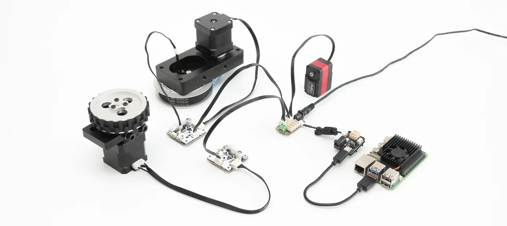
CONNECT IN TWO STEPS
The host does not need a separate wiring path for every device type. One interface can address up to 252 bus devices.
HOST SIDE
PCs, Raspberry Pi, Jetson, and other Linux SBCs use USB. ESP32, STM32, and Arduino controllers use UART.
BUS SIDE
Assign each device a unique ID and connect a bus supply that matches every device on that power group.
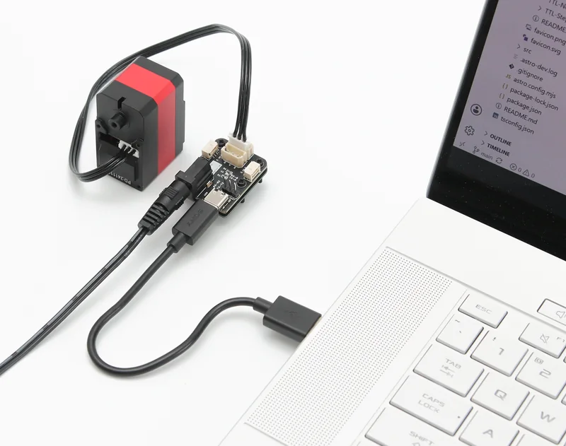
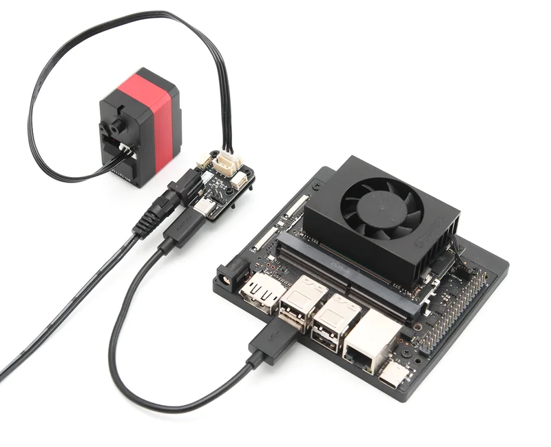
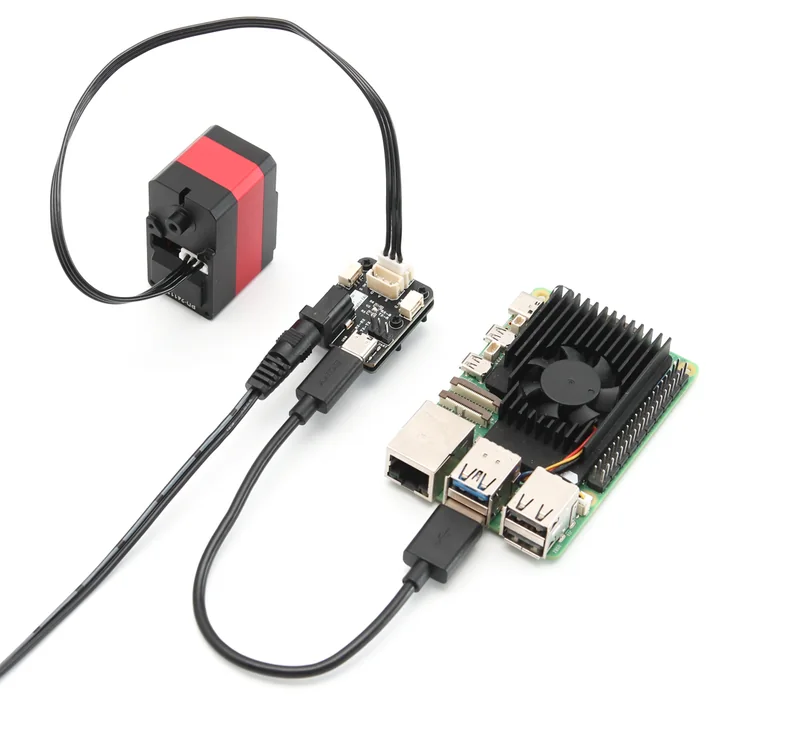
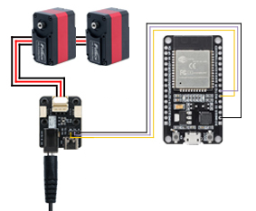
BOARD RESOURCES
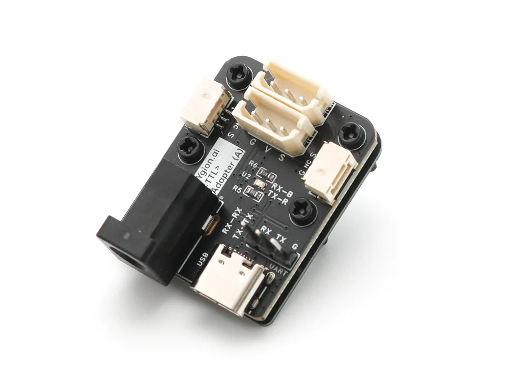
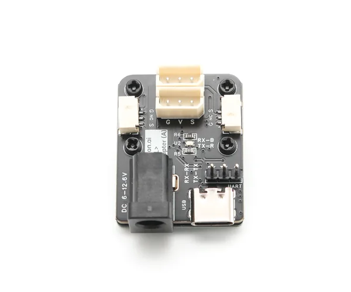
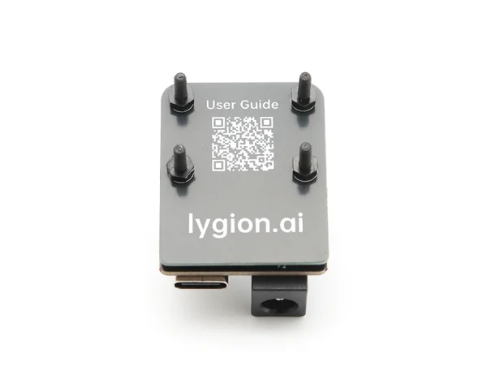
USB alone can support communication, configuration, and firmware updates for compatible low-voltage devices. Driving devices requires a bus power supply with a voltage that matches every connected device.
POWER GROUPING
Multi-device systems do not need to share one supply. The board-to-board communication ports can link another TTL Adapter (A) or a Hub Board while keeping device power groups isolated.
Read the power grouping and isolation guideUse Hub Boards when more TTL bus ports are needed.
Separate devices by voltage or current demand.
The inter-board link carries signal and ground only.
All groups still share one communication bus and therefore one address space.
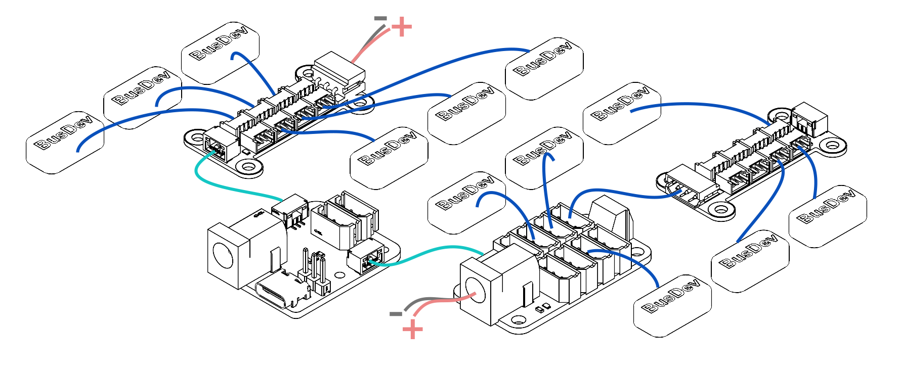
SPECIFICATIONS
PACKAGE OPTIONS
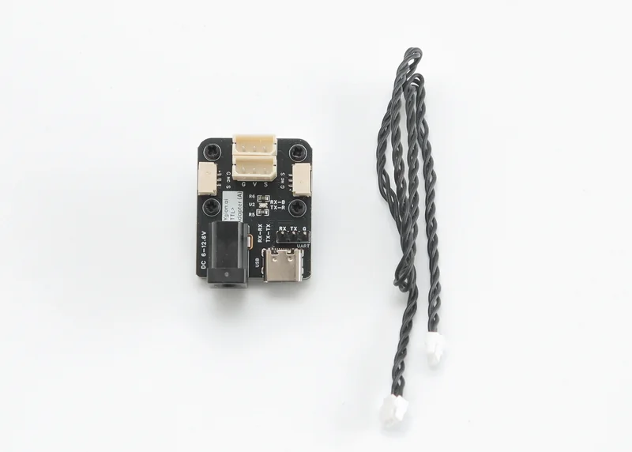
PACKAGE 1TTL Adapter (A)
GH1.25-3P cable
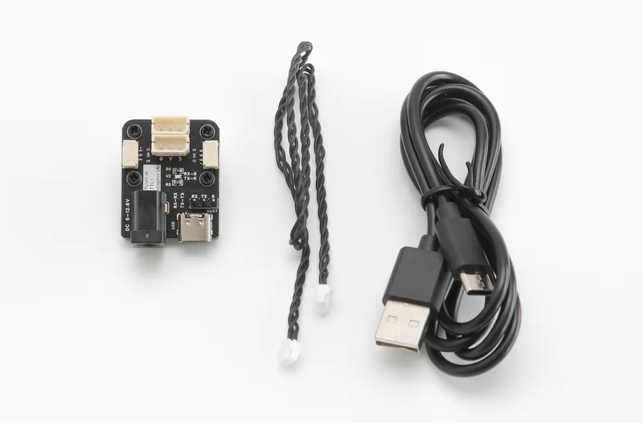
PACKAGE 2Basic package
USB Type-C data cable
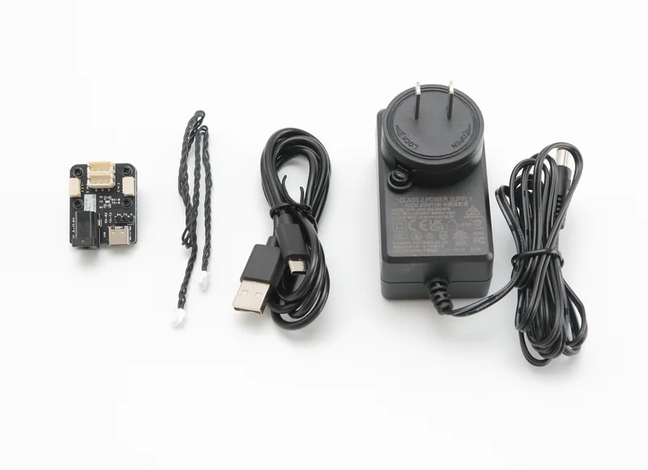
PACKAGE 3Debug package
12 V 3 A DC5521 supply
The GH1.25-3P cable can be used for board-to-board communication and grouped power supplies.
DEVELOPMENT SUPPORT
Use the product Wiki for interface details, configuration tools, SDKs, and development examples.